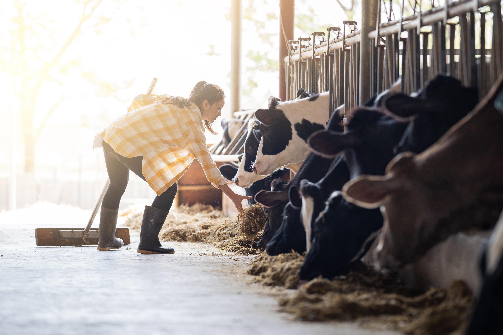

Featured StoryFrom Our Farm to Your Table: Understanding Dairy Goodness
Discover the thoughtful practices, careful handling, and everyday attention that help bring dairy products from farm to home. Explore the journey behind the goodness found in everyday dairy essentials.